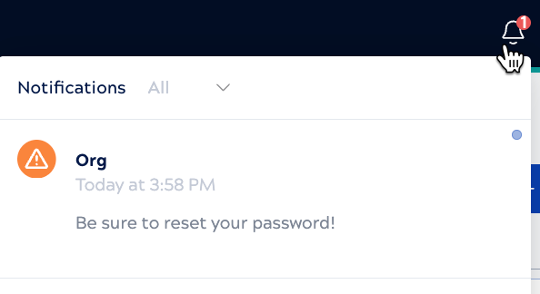

Logs, alerts, and notifications
The SnapLogic platform has a built-in system of logs and notifications.
The SnapLogic Platform logs events such as Snaplex alerts and environment activities. Environment admins and non-admins can set up email and Slack notifications (when the Slack integration is enabled) for:
- A specific Snaplex in Admin Manager
- A specific task, when it starts, completes, fails, stops, or is suspended
Environment admins can set up email or Slack notifications for:
- All Snaplexes in the environment
- Specific Snaplex alerts and environment activities (one notification per event)
- Custom broadcast messages that all users can
view from the banner notification bell:

The visibility and management of alerts, logs, and notifications in the Monitor Notification center, depends on your account type:
- Non-admin users can:
- View events, activities, notices, and configured notices (broadcast messages)
- Download logs
- Environment admins can:
- View events, activities, notices, configured notices (broadcast messages), and configured notifications
- Download logs
- Configure email and Slack notifications
The following sections provide more details about:
Snaplex events
The Alerts tab in the Notification center displays the alerts that Snaplex nodes generated during the specified time range. From this tab, you can view alerts and download alert logs and Snaplex logs to troubleshoot issues. You can address issues with self-managed Snaplexes (Groundplexes). SnapLogic manages issues with Cloudplexes.
Environment activitites
The Activity tab in the Notification center displays the following event types:
| Event type | Description |
|---|---|
| ACL | Events related to user accounts, groups, and permission changes for assets. |
| APIM | APIM user activities and subscription user notifications:
|
| Asset | Events related to assets such as projects, pipelines, accounts, and files:
|
| User | Events related to user accounts:
|
| Policy |
Policy created, removed, or updated at any level in the environment, including projects and shared folders in Project Manager and the API and version level in APIM. |
| Distribution (Dist) |
For Snap Pack distributions:
|
| Environment (Org) | Changes to environment settings:
|
| Project | Project-level change to the pipeline validation setting. |
| Snaplex | Changes to Snaplex version, state changes, and events:
|
| Session | User session start and end. |
| Group | Group created updated or deleted. |
| Git | Logs the following Git operations:
|
| SnapLogic admin update | Changes to SnapLogic admin access. |
Email and Slack notifications
Non-admin and Environment admins can set up email and Slack notifications for Snaplex and task events during configuration. Environment admins can set up email and Slack notifications in the Notification center for the following event categories:
| Notification category | Available types |
|---|---|
| Account | Account stale. |
| ACL | User permission added to or removed from an asset's Asset Control List (ACL). |
| API | Concurrent or daily API usage. |
| APIM | Migration from APIM to APIM 3.0 or pending subscription. |
| Asset | Asset created, deleted, updated, moved, renamed, ownership change, or account stale. |
| Broadcast message | Custom scheduled message sent to all environment users (displays in the banner). Learn how to Create a broadcast notice. |
| Dist | Snap Pack change in the asset label, override of the FQID, or subscribe. |
| Group |
Group create, delete, update, or create provisioned. |
| Session | Session start, end, or SSO session. |
| Snaplex | Auto scale config update, congestion, node added, node connection rejected, node crash, enter maintenance mode, leave maintenance mode, node restart, pipeline interrupter, or version update. |
| Snaplex node | CPU utilization, disk usage, or memory usage. Learn how to Create a Snaplex node notification and address underlying issues |
| Task | Execution duration percentage over or time limit. Learn how to Create a task notification and address underlying issues. |
| User |
|